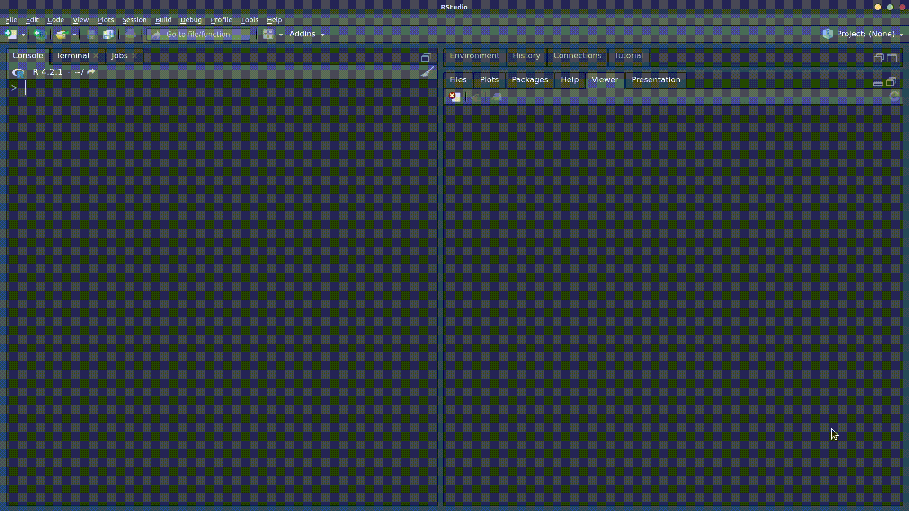

Learning all of the functions needed to become proficient in R is a substantial undertaking. Flashcards are a great way to learn the syntax of computer languages (Hermans 2021). The goal of flashr (pronounced “flash-r”) is to provide a quick way to view decks of flashcards.
flashr can use existing built-in flashcard decks hosted at the flashr_decks GitHub repo, including functions and arguments from R for Data Science, first edition and R for Data Science, second edition and glossaries from several psyTeachR books. Check out some example decks.
In addition to built-in decks, you can easily create your own decks using CSV files. This allows you to customize existing decks or create completely new decks. Also, while geared toward learning R, this package can be used to build decks for anything—not just computer syntax!
Installation
You can install the stable released version of flashr from CRAN with:
install.packages("flashr")You can install the development version of flashr like so:
# install.packages("remotes")
remotes::install_github("JeffreyRStevens/flashr")Example
To view, for example, the flashcard deck on data types:
This randomizes the order of terms and give terms before descriptions. If you would like to present descriptions before terms:
flashcard("data_types", termsfirst = FALSE)
Building decks
To build your own deck, save a CSV file with a term column and a description column. You can also include a package column if you want the package name included with the term and a title column if you want to specify the title of the deck.
my_deck <- read.csv("inst/extdata/operators.csv")
head(my_deck)
#> term description package title
#> 1 = assignment operator base Operators
#> 2 <- assignment operator base
#> 3 |> pipe operator (base R) base
#> 4 + addition base
#> 5 - subtraction base
#> 6 * multiplication baseThen run the flashcard() function on your file.
flashcard("inst/extdata/operators.csv")Check out the Get Started vignette for more details on creating your own flashcard deck.
Citation
To cite flashr, use:
Stevens, Jeffrey R. (2024). flashr: Creates flashcards of terms and definitions. (version 0.2.0) https://cran.r-project.org/package=flashr
Contributing to this package
Contributions to flashr are most welcome! Feel free to check out open issues for ideas. And pull requests are encouraged, but you may want to raise an issue or contact the maintainer first.
References
Hermans, F. (2021). The Programmer’s Brain. Manning. https://www.manning.com/books/the-programmers-brain